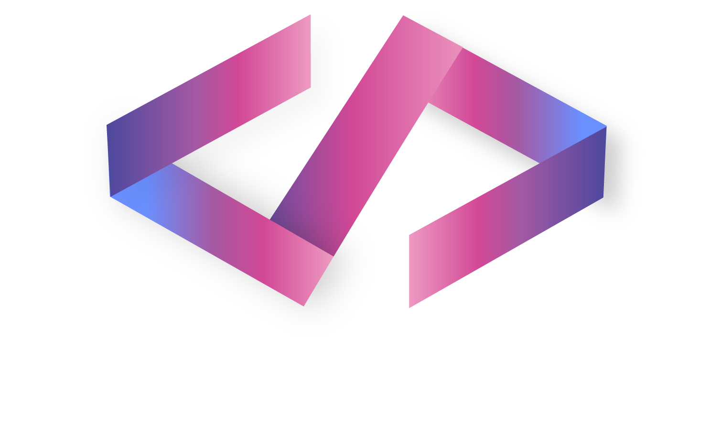

تفضل تشتغل كيف؟
لوحدي وبتركيز
مع فريق صغير
في أجواء الهاكاثونات
بشكل غير مباشر عبر Github
مرن جداً واقدر اتعامل معها كلها
لو انحطيت في فريق مجهول، وش تسوي؟
اتصرف بشكل قيادي واوزع المهام
اشارك عشان اثبت وجودي كعضو فعال
اراقب اول، ثم ابدأ اندمج
ابقى هادي، واؤدي مهمتي بصمت
انسحب، اشتغل فقط مع معارفي
كيف تحب تتعامل مع المشاكل؟
أواجه المشكلة مباشرة وأبحث عن حل
أبحث عن مساعدة من الآخرين
أتحلى بالصبر وأبحث عن حل تدريجي
أترك الأمور تسير كما هي
أبحث عن حلول مبتكرة وغير تقليدية
ارسال